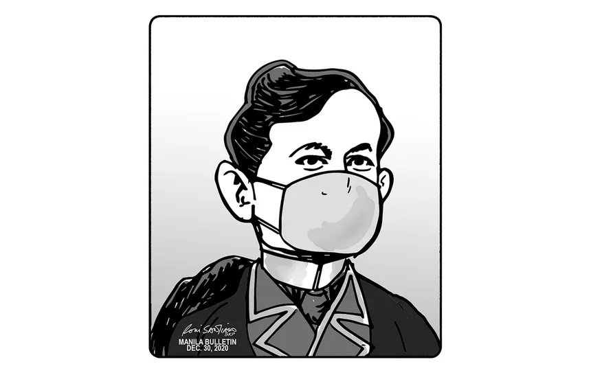

"Noli Me Tangere: The Musical" (1995). This stage adaptation of Rizal’s novel, with music by Ryan Cayabyab, has been performed numerous times in the Philippines and abroad, bringing Rizal’s story to new audiences.
"Mi Ultimo Adios" (My Last Farewell). Rizal’s final poem has been set to music by various composers, including Julio Nakpil and Ryan Cayabyab, and is often performed during Rizal Day celebrations.
Comparisons to the Present Day
Anonymous
José Rizal's fight for freedom, justice, and Filipino identity resonates deeply with the challenges faced by the Philippines today. While his era was marked by Spanish colonial rule, many of the issues he addressed—colonial mentality, corruption, and social justice—remain relevant.
Rizal criticized the inferiority complex many Filipinos developed under colonial rule. Today, colonial mentality still affects how some Filipinos view their own culture, preferring Western ideals and brands. Rizal’s call for national pride and self-love remains vital in overcoming these lingering effects.
Rizal exposed the corruption of colonial officials and the church. Similarly, today’s Philippines still struggles with corruption in politics and government. Rizal’s emphasis on transparency and justice continues to inspire those working for reform and accountability.
Rizal’s ideals of justice, civic engagement, and national pride are just as relevant now as in his time. As the Philippines faces contemporary challenges, his philosophies offer timeless guidance in the ongoing struggle for freedom, equality, and a better nation.

Anonymous